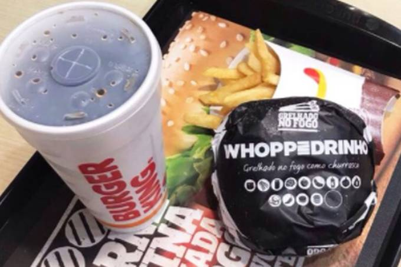

Burger King investe em reciclagem

Plástico é um inimigo ?

Metal como é reutilizado
Reciclagem é um conjunto de processos para reaproveitamento dos materiais descartados, reintroduzindo-os no ciclo produtivo. Assim, materiais que antes seriam destinados ao lixo, podem ser reutilizados como matéria-prima para novos produtos.
Em palavras mais simples, Reciclar é reaproveitar o melhor de cada resíduo descartado e deixá-lo pronto para um novo uso, seja como matéria-prima para confecção de novos produtos ou como fonte de energia, por meio do CDR - Combustível Derivado de Resíduos.
A reciclagem existe por quê temos alguns problemas: Alto volume de lixo gerado em tudo o que fazemos, o descarte incorreto do mesmo e o tempo de decomposição de cada material.
Segundo a Associação Empresarial para Reciclagem (CEMPRE) - no Brasil são produzidos mais de 80 milhões de resíduos anualmente. No lixo convencional (não orgânico e doméstico) constata-se que, enquanto aproximadamente 45% do lixo produzido é reciclável apenas 2% é reciclado. Dentre os materiais reciclados: 4% é metal; 3% é vidro; 3% é plástico. Papel e papelão somam 25%. O restante do lixo vai para lixões (75%), aterros controlados (13%) e aterros sanitários (10%).
Lixo é quando você joga fora tudo na mesma lixeira, sem separara o que poderia ser reciclado.
O que pode ser reciclado deve ser separado nas lixeiras corretas, tornando-se resíduos.
Em Agosto de 2010, foi promulgada a Política Nacional de Resíduos Sólidos (PNRS) que visa organizar a forma com que o Brasil lida com o lixo gerado e também fortalecer a cobrança por transparência dos setores públicos e privados no gerenciamento de seus resíduos. Porém, 9 anos depois e ainda temos problemas como a existência de Lixões a céu aberto. Por isso, a atitude deve partir de nós.